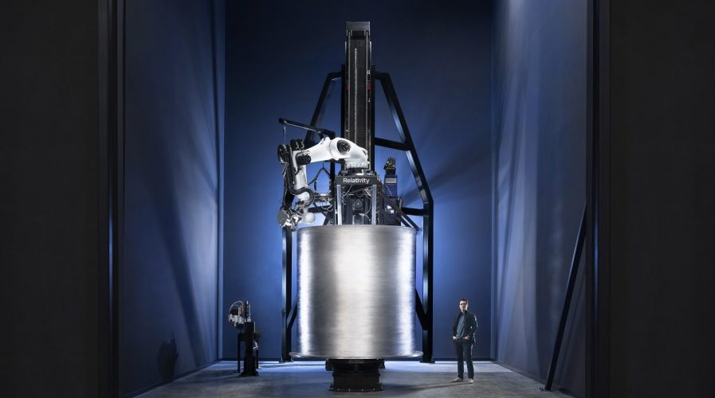

Une Fusée ... imprimée en 3D
Nous savons tous à quoi ressemble une fusée, et qu'il faut des matériaux résistants afin d'endurer le décollage, mais est-on obligé de rester sur une fabrication à la main, avec des ouvriers et des ingénieurs mettant des mois à produire quelques pièces qui coûtent de plus des millions d'euros?
Et bien si vous avez pensé "oui" vous risquez d'être surpris. En 2023, une compagnie américaine du nom de Relativity Space a imprimé en 3d non seulement la fusée mais également les moteurs (Aeon 1) et ceci grâce à des machines titanesques. Des moteurs, alimentés avec un mélange de méthane et d'oxygène, lui permettent une poussée par moteur d'environ 100kN soit environ 1000 kg chacun. On peut donc imaginer ce que cela représente, en tout, sur le premier étage qui compte neuf moteurs et qui permet à la fusée de décoller. À ceux -ci s'ajoute un autre moteur sur le deuxième étage, servant, lui, une fois dans l'espace. La fusée, une fois construite atteint une hauteur de 33.5m, un diamètre de 2.28m pour une masse de 9 280 km
Afin de réussir ce chef d’œuvre, des machines d'une complexité folle durent être conçues, comme le bras robotique ou le support sur lequel ce qui est imprimé tourne. Ceux-ci se complètent. Pas de fusée sans l'un des deux.

Le Bras :
Concernant le bras, il s'agit d'un bras robot (comme on en voit dans les usines) équipé d'une torche plasma soudant du fil d'aluminium en continu sur les parois déjà imprimées. On note que la température du jet de plasma se trouve à environ 700°C, ce qui permet de faire fondre le fil. Pour information, le fil qui est injecté dans la tête d'impression est du fil d'aluminium très fin guidé jusqu'au bout grâce à un système de poulies qui lui permet de rester tendu tout du long. Mais ce mécanisme d'impression consomme beaucoup d'aluminium, on parle de 25cm/s déroulés de la bobine.
La Base
Grâce à un système guidé par ordinateur, elle va tourner en fonction de la vitesse d'impression et ainsi permettre d'obtenir une vitesse maximale.
Si ce projet fut annoncé début 2021, ce n'est que mi 2022 que débuta le processus de fabrication de la fusée et de ses moteurs. et c'est en Mars que le projet fut prêt à être lancé dans l'espace (après de nombreux essais non concluants). Le 23 Mars 2023, la fusée décolla pour finalement ne pas dépasser les 130 Km d'altitude. Ce fut cependant une avancée majeure dans l'industrie de l'aérospatial.